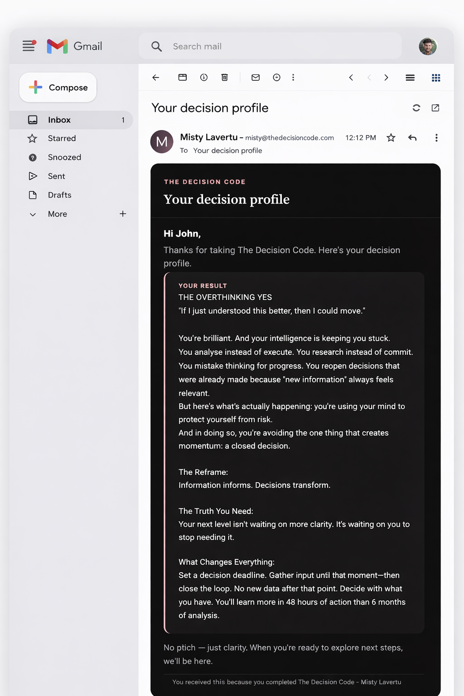

Outcome 01
Decision State
How you stall or move. Answer fast; first instinct counts.
Two-minute diagnostic: your Decision State, the drag underneath, and one concrete shift to move. For capable leaders who already know the next step but keep postponing it.
Begin The Assessment
First instinct counts — we’re mapping reflex, not rehearsed story.
Decision Drag shows up underneath the “reasonable” reasons you wait.
A single actionable start — not a laundry list — so you can move the same day.
Your read hits your email — save it, revisit it, act when you’re ready.
How you stall or move. Answer fast; first instinct counts.
What Decision Drag is doing under the surface.
Something you can act on immediately — not a laundry list.
Your read sent to the email you provide, yours to keep.

When you’re ready to go deeper than a diagnostic, the Movement is where implementation lives — live room, seven-day container, and sustained programs.
Explore the Say YES Movement →